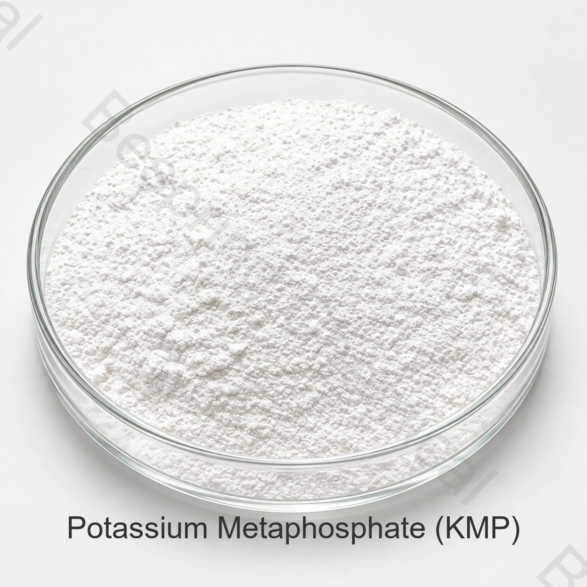

Meat processing
Evaluated in suitable phosphate systems for emulsification, moisture management, texture and color-stability objectives.
Food grade phosphate · Potassium salt · CAS 7790-53-6
Potassium metaphosphate is a potassium phosphate salt used in selected meat, cheese, evaporated-milk and aquatic-seasoning systems for emulsification, moisture management, sequestration and process control.

Product image · confirm grade and packaging when ordering
Include the food application, target specification, quantity, destination and required documents.
Qualification scopeHACCP, Kosher, Halal and ISO documents on request
Standard packing25 kg bag
Container loadingReference: 20 MT / 20' FCL
Batch documentsCurrent specification and COA on request
Product overview
Food grade potassium metaphosphate (KMP) is a potassium phosphate salt identified by CAS 7790-53-6 and the general formula KPO3. The supplied grade is a white powder intended for evaluation in food-processing systems that need phosphate functionality without sodium.
The material can support emulsification, moisture retention, water softening, metal-ion sequestration, texture adjustment, color protection and oxidative-stability objectives. Performance depends on the complete formulation, process, dosage and destination-market rules.
Food formulation uses
Evaluate the following application targets in the actual food and process, subject to destination-market permission.
Evaluated in suitable phosphate systems for emulsification, moisture management, texture and color-stability objectives.
May support fat emulsification, metal-ion control and microstructure adjustment in selected cheese formulations.
Can be assessed for mineral control, buffering-related process stability and emulsification in qualified dairy systems.
Evaluate microstructure and quality targets in selected aquatic-seasoning systems through formulation trials.
Metal-ion chelation and water-softening functionality may help manage process-water interactions in the complete formulation.
May contribute to color protection, antioxidant systems and preservation objectives when permitted and validated.
Commercial specifications
These commercial reference limits are separate from batch COA results. Agree the units, methods and acceptance criteria in the signed specification.
Swipe or use the keyboard to read all columns
| Test item | Unit | Specification |
|---|---|---|
| P2O5 content | % | 53.5–61.5 |
| Arsenic (As) | % | ≤0.0003 |
| Heavy metals (as Pb) | % | ≤0.001 |
| Fluorine (F) | % | ≤0.001 |
| Lead (Pb) | % | ≤0.0002 |
| Viscosity (unit and method unspecified) | 10 | ≤10 |
| pH value | — | 3.0–5.0 |
| Appearance | — | White powder |
Method check: The viscosity entry does not define a complete unit or test method. Establish its measured quantity, unit, concentration, temperature and analytical procedure before using it as an acceptance criterion.
Buyer qualification
A useful approval compares the offered source with the actual food process and market, rather than relying on the product name alone.
Confirm CAS number, formula, P2O5, pH, contaminants, appearance and the method behind every critical test.
Request specification/TDS, SDS, representative or batch COA and applicable HACCP, Kosher, Halal and ISO documents.
Evaluate KMP in the real formula and process for solubility, mineral interactions, texture, color, flavor and shelf-life targets.
Storage and handling
Buyer questions
It is evaluated in selected meat, cheese, evaporated-milk and aquatic-seasoning systems for functions such as emulsification, moisture management, metal-ion sequestration, texture adjustment, color protection and process stability.
The formula KPO3 contains potassium rather than sodium. This does not by itself establish a finished-food nutrition or labeling claim; review the complete formula and local rules.
The commercial reference is 25 kg per bag, 20 metric tons per 20-foot container and a 500 kg minimum order. Confirm current pallet, liner and loading details in the quotation.
Provide the intended food application, target specification and test methods, quantity, packaging, destination port, required documents and delivery schedule.
Related potassium phosphates
Condensed potassium phosphate with a different composition and supplied specification.
Orthophosphate used in selected buffering, culture and fermentation systems.
Highly soluble alkaline pyrophosphate for selected food-processing systems.
Specification-led sourcing
Share the technical and commercial details needed to review the offered grade.
Tell us your grade and destination market so we can confirm which documents are available for your order.
An external reference is not a batch certificate or a Bespring product specification.